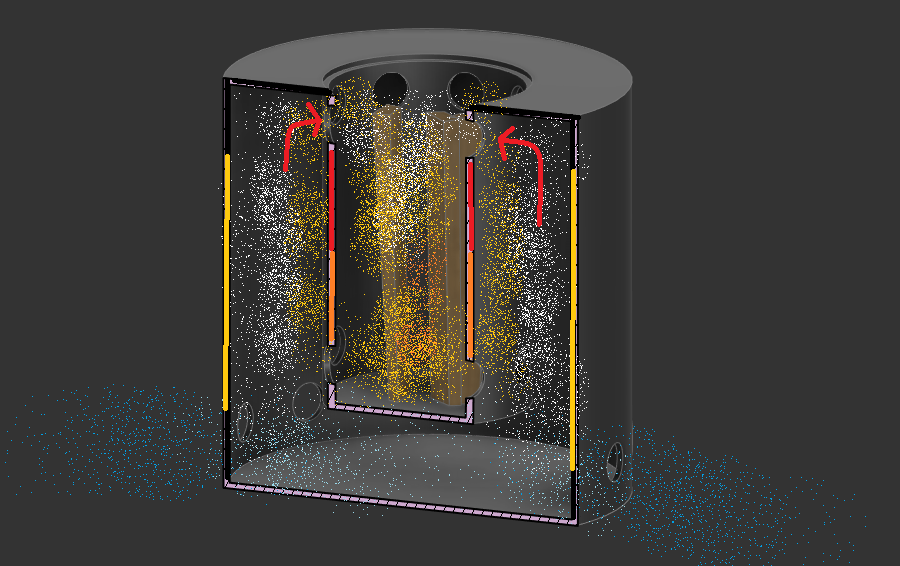
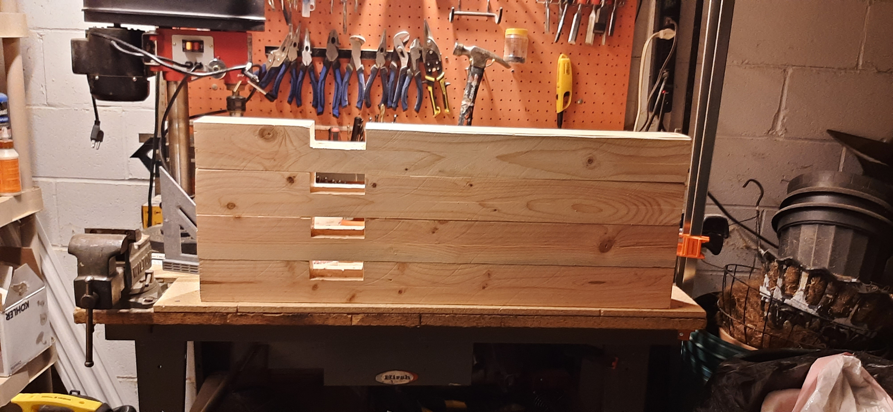
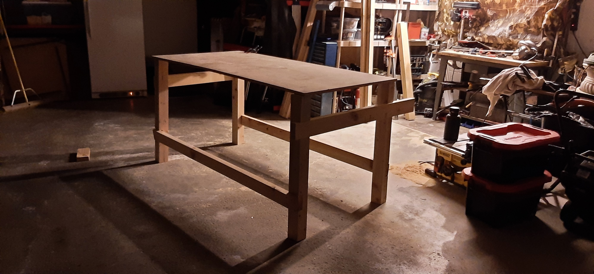
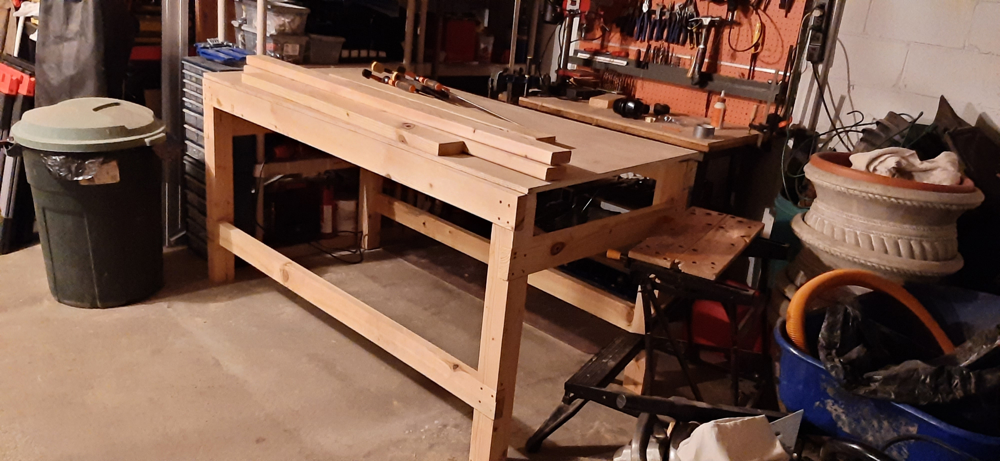

Various Projects for Home Improvement

Solo Stove Imitation
In a similar vein as the hobby projects this was a craft for Christmas. Youtube introduced me to the idea of a smokeless fire pit which shares some of the double-dipping style efficiency gains you see in a combined cycled power cycle, but instead of taking advantage of waste heat to wring out heat, it uses pockets of air flowing on an annular chamber to preheat additional air for the burn that starts in the lower hole.
I made a mock sketch showing a rough diagram of airflow. Ambient temperature air enters through the bottom. air then has two places to enter. One at the bottom of the inner can, one at the top. The bottom holes provide initial air while the air that travels up the sides gets heated as it travels up which gets added as additional air at a higher temperature.
While the fabrication did not take more than a day, choosing materials and an appropriate size for it contributed to most of the learning for this. There are several things to address. This is not completely smokeless, certainly not as made. I also did not sufficiently deal with the heat that gets to the outer shell; it is simply unmovable with unprotected hands. Future versions would address some of the flaws and probably be made of something thicker.
This is a video of it. if you cannot view it in your browser, click here.
Workshop Bench
At a certain point, having a dedicated workbench became a priority to have for future projects so over the course of December 2023, I decided to put some work into one. The idea was to create a rigid frame that would act as a foundation for future additions as they came to mind.
I started by joining lumber from 4"x4" posts using a worksite table saw. This project helped me appreciate some foundational elements of woodworking more clearly like the extent of difference a properly calibrated saw can have, while also helping me learn how to make do with the tools I have.
Once each leg was cut, I begin squaring the length-wise pieces. The beams and cross members, if you will, are cut of the same nominal 2"x10" lumber to create 1.5"x4" actual dimension members.
once everything came together, it fit very well due to a lot of the preprocessing of the lumber done earlier in the project. The posts have half lap joints that provide additional strength and lessening the burden on the screws. Several features were considered for the final product, but are not present as the table continues to undergo revision at the time of writing.
This is the final state of the table when I called it for the time.
No doubt, if I make another, I will observe somethings I want to keep or remove in future attempts. As is, I am happy with the simplicity of construction, the rigidity of the starting structure and the knowledge we can keep adding to it. the horizontal members were staggered more for appearance than pure function, but the limits of the table's strength are nowhere near being tested so this is fine.
Elephant Latch
Right after graduation, I thought "it would be nice if I don't have to hold this top-loading door while I try to throw my clothes in!" so I made a small latch and it has a cam release due to the curving geometry towards the pin. It is affectionately known as the "Elephant Latch". I have been told due to its resemblance to both an elephant and a latch.
YouTube made this into a "short" so I will have to change that to present that properly, but here is a link to it in operation.
Honda Key Fob
I broke my key fob a little while ago. These can be upwards of $100 to replace. It was when I got stranded at a parking I met a fiend calling himself the "immobilizer chip" and it turned out I couldn't drive without it. When I started out, I just focused on getting details "exact". The first key was not meant to be a final copy, but just experiment with fitting the form of the key, and so it doesn't look sturdy and it isn't. Another piece I appreciated is how crucial it is to get the snap joint correct at the back of the key. On the OEM model, there are 3 main ways the fob is fastened. It has a forward screw where the key shaft connects, then a snap fixture at the wring handle, and slots along the sides finally. It was in iterating the design where I learned that some internal details could be ignored while a strong snap joint was the easiest way to fit the halves together.
The current print has a heat seal along the seam using a low grade solder iron.
Replacement Glasses Arm
My dad has prescription sunglasses and one of the arms broke off and so I took to Fusion 360 to begin sketching up a replacement. I used Fusion canvases to provide the basis of the projection over the top and side. A glasses arm is an interesting 3D object due to its changing shape across multiple planes simultanously like a Benchy. It took two tries and I was able to print a workable arm that attached.